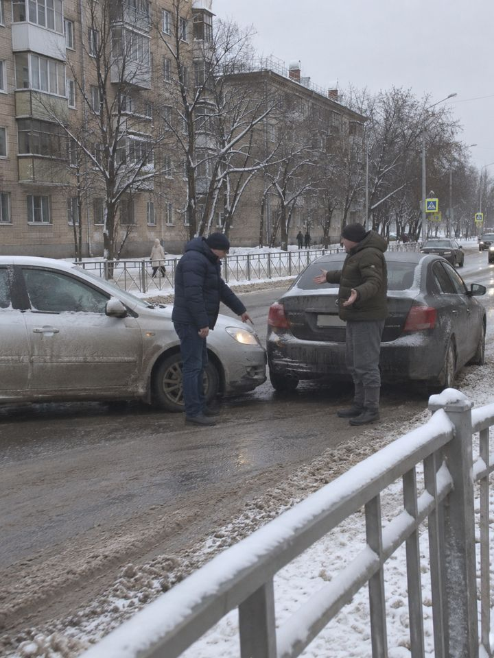
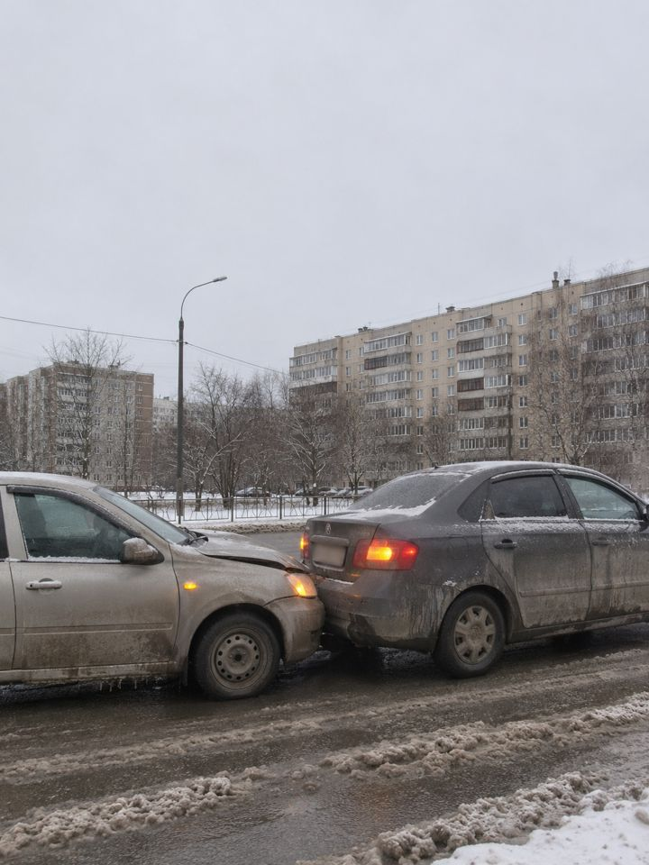
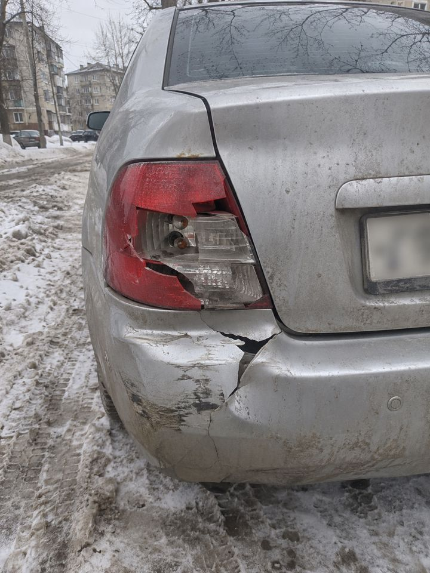

Послушать итог голосом.
Готовы 5 материалов на одну тему и 3 новых агента. Ничего не опубликовано. Перед выходом нужны ответ юриста и твои решения внизу страницы.
Ты не хочешь постов про магнитолу. Человек должен открыть материал, даже если ничего не собирается покупать: он узнаёт свою ситуацию, понимает проблему, видит варианты и только потом встречает TEYES.
Обычная фотография из жизни и короткая фраза. Боль, деньги, спор. Без продукта, неона и большого логотипа.
Твои скрины чужих статей: «Кто виноват в ДТП, если въехал в зад» – 45,2 тыс. читали, «От тебя камень отлетел» – 4 665. И запросы из жизни: дети в межгород, раздражение за рулём, пробка.
Одна тема, но текст заново под цель: Инстаграм – репосты, ВК – сообщения, Дзен – зашли и дочитали, сайт и Телетайп – поиск.
| Площадка | Почему может зайти | Что не доказано |
|---|---|---|
| Дзен | Твои скрины. Лента по интересу: тема ДТП понятна всем. На нашем канале сейчас статьи открывают в 5,1% показов, есть куда расти. | Чужие цифры, не наши. Просмотры могут прийти не из Новосибирска: у нас сейчас 2,63%. Заявок с такого охвата может быть мало. |
| Инстаграм | Официально отправки немного важнее лайков для новых людей (Моссери, 2025). Это совпадает с твоим «репосты главное», только без мифа про «в 3–5 раз». Шпаргалку и спор удобно пересылать. | Официально сохранения в рекомендациях ленты не названы, поэтому не обещаю, что они двигают охват. Реклама здесь в РФ запрещена. |
| ВК | Официально важны реакции, репосты, комментарии, пропуски и свои материалы. Спорная тема даёт обсуждение. Новосибирск и шаг в сообщения. | Лучше ли карусель одного фото, данных мы не нашли. Это наш тест. Кейсов каруселей с цифрами не нашли. |
| Сайт | Вопрос совпадает с языком поиска и ведёт к услуге. | Спрос не снят: браузер был отключён. До выкладки проверить Wordstat. |
| Телетайп | Удобная памятка для ссылки в постах и переписке. | Индекс и вес ссылок не замерены, домен падал в августе. Прогноз на него не закладываю. |
Главный риск идеи: ДТП интересно всем, но покупает тот, кому до нас ехать. Широкая тема может собрать просмотры, а заявки дать редко. В твоём файле это учтено ступенями Ханта: широкие темы греют, но продают другие. Поэтому в отчётах сначала заявки и город, а потом охват.
Все сцены сгенерированы, это сцены, а не наш случай. Текст на картинках собирает скрипт, не нейросеть: кириллица не поплывёт. Номера размыты. Клик по карточке открывает полный размер. Факты сверены с реестром на 84 строки в репо редакции; основа – ПДД, КоАП, ГПК, закон об ОСАГО и Пленумы ВС, часть строк читалась через пересказ или зеркало, они там помечены. Юрист не смотрел.
Въехали сзади, и каждый говорит своё. Один: «Кто сзади, тот и виноват». Второй: «А зачем ты резко затормозил?»
Единого правила при ударе сзади нет. В ПДД нет дистанции в метрах, но есть запрет на резкое торможение без нужды и обязанность уступить при перестроении. За дистанцию обычно штрафуют по ч. 1 ст. 12.15 КоАП – 2 250 ₽, хотя практика неоднородна. А кто платит за ремонт, штраф окончательно не решает: в споре это решает суд.
Запись с регистратора могут приобщить к делу, но оценят её вместе с другими доказательствами. Запомни, когда, кем и где она снята: суд может спросить.
Что сделать сразу после удара:
Европротокол: если споришь и фото в приложение не передали, это плохая идея. Запись регистратора фото в приложении не заменяет: такого нигде не сказано. Пределы: 100 тыс. ₽ в общем случае, 200 тыс. ₽ при разногласиях и до 400 тыс. ₽ без них, 200 и 400 при передаче данных через приложение.
Какой у тебя регистратор: только вперёд или и назад? Напиши в комментарии марку, модель и год машины, скажем, какой вариант записи к ней подойдёт.
Это не юридическая консультация: при споре нужен юрист. Сцены сгенерированы, а не наш случай. Снимок с регистратором – наша работа.
Он перестроился перед вами и нажал на тормоз. Вы въехали.
Он выходит и говорит: «Кто сзади, тот виноват». Не всегда. Единого правила нет, всё зависит от обстоятельств: как он перестроился, зачем тормозил, какая была дистанция. И чем вы это покажете, кроме слов.
У вас бывало так? Вечер, Красный проспект, снежная каша, плотный ряд. Стоите у бамперов, и у каждого своя версия. Или наоборот: вы стояли на светофоре, а вам въехали сзади.
Что здесь важно:
Штраф тут не самое большое. За дистанцию обычно штрафуют по ч. 1 ст. 12.15 КоАП, 2 250 ₽, хотя самого слова в статье нет. За «не уступил» – предупреждение или 500 ₽. А вот кто платит за ремонт, постановление ГИБДД окончательно не решает. Если по документам полиции отвечают оба, а доли суд не установил, страховщики платят поровну. В споре долю определяет суд.
Первые минуты на месте:
И ВСЁ ЭТО НАДО ПОКАЗАТЬ. А регистратор смотрел только вперёд.
Передняя камера может показать, почему затормозили. Задняя – как подъезжала машина сзади. Верховный суд прямо называет регистратор среди средств, запись с которых может быть приобщена к делу по КоАП (Пленум № 20, п. 26). Но заранее установленной силы нет ни у какого доказательства: запись оценят вместе с остальным.
И запись надо сохранить:
Как именно это работает, зависит от модели, смотрите инструкцию своей.
Что поставить, зависит от машины и магнитолы. Часть магнитол TEYES может писать с камеры заднего вида: в карточке CC3 2K это есть, в карточке CC3L нет. Пишет ли она на ходу, в карточке не указано, это уточняем. Для записи с двух камер на CC4 Pro, по ответу на странице TEYES, нужен ещё блок. Поэтому без вашей машины ответа нет.
Напишите нам: vk.me/teyes.magnitola
Марка, модель, год и фото панели. Скажем до установки, что можно поставить, чтобы запись была и сзади. Мы в Новосибирске, Сухарная 35, корпус 13.
А как у вас: регистратор смотрит только вперёд или назад тоже? И чем закончился ваш спор, если он был?
Знаете того, кто уверен, что «кто сзади, тот виноват»? Перешлите ему.
Это не юридическая консультация: при споре нужен юрист. Сцены сгенерированы, это не реальная авария. Снимок с регистратором – наша работа.
Как у вас: регистратор смотрит только вперёд или назад тоже? И чем закончился ваш спор, если он был?
Запасной заголовок: Кто сзади, тот и виноват?. 3 870 знаков. Обложка:

Вас подрезали, и вы въехали сзади.
Сцена придуманная, но знакомая многим. Вечер, снежная каша на дороге. Вы едете в своём ряду. Машина справа перестраивается прямо перед вами и тут же бьёт по тормозам. Вы тоже тормозите, но не успеваете.
Выходите оба.
– Ты зачем под колёса полез?
– Я? Это ты мне в зад въехал. Кто сзади, тот и виноват, все это знают.
– Ты подрезал и встал посреди дороги!
– Докажи.
Вот короткий ответ. «Кто сзади, тот виноват» – присказка, единого правила нет. Въехавший виноват не всегда. Резко тормозивший тоже не виноват автоматически. Всё зависит от обстоятельств и от действий каждого.

Сцена для иллюстрации.
Какая была дистанция? По п. 9.10 ПДД она должна позволять избежать столкновения. Числа в метрах в правилах нет. Обычно за это штрафуют по ч. 1 ст. 12.15 КоАП на 2 250 ₽, хотя слова «дистанция» в статье нет и практика неоднородна.
Можно ли было перестраиваться? Поворотник права не даёт. Манёвр не должен создавать опасность и помехи (п. 8.1), а перестраивающийся уступает тем, кто едет попутно прямо (п. 8.4). Если из-за его манёвра вам пришлось тормозить, это может быть нарушением. По ч. 3 ст. 12.14 КоАП за него положено предупреждение или 500 ₽.
Зачем он затормозил? Пункт 10.5 запрещает резко тормозить, если это не нужно для предотвращения ДТП. Значит, важно, что было перед ним: опасность или пустая дорога.
Постановление ГИБДД этот вопрос окончательно не закрывает. В споре его решает суд.
Если отвечают оба, а доли суд не установил, страховщики платят поровну (п. 22 ст. 12 Закона об ОСАГО). То есть вам могут выплатить половину. Не согласны – идите в суд, он обязан установить степень вины (п. 46 Пленума Верховного суда № 31 от 08.11.2022).
Это не юридическая консультация: в настоящем споре нужен юрист, который увидит ваши документы.

Сцена для иллюстрации.
Если есть пострадавшие, сначала люди: первая помощь, скорая, полиция, ждать на месте (п. 2.6). Европротокола в этом случае нет.
Если пострадавших нет:
Верховный суд прямо называет регистратор среди средств, запись с которых может быть приобщена к делу (п. 26 Пленума № 20 от 25.06.2019). Заранее установленной силы у неё нет: запись оценят вместе с остальными доказательствами (ст. 26.11 КоАП, ст. 67 ГПК).
В нашей сцене передняя камера может показать перестроение и торможение. А если въехали в вас, передняя этого не снимет. Как подъезжала машина сзади, может показать задняя.
Чтобы файл не пропал:
Как именно это устроено, зависит от модели, смотрите инструкцию к своей.
Откройте последний ролик со своего регистратора. Верны ли дата и время? Что видно в темноте? Есть ли запись того, что происходит сзади?
Если сзади пусто и вы хотите это исправить, вариантов записи и спереди, и сзади несколько. Какой подойдёт, зависит от вашей машины и магнитолы, скажем до установки. Мы TEYES Sibir, установочный центр в Новосибирске. Пришлите марку, модель, год и фото панели, контакты на странице: установка видеорегистратора.
Кто виноват, если въехали сзади: дистанция, торможение, запись. Адрес /blog/rear-end-collision-who-is-at-fault. Запрос: кто виноват если въехали сзади.
Кто виноват, если въехали сзади, зависит от обстоятельств: единого правила «кто сзади, тот и виноват» нет. К водителю сзади будет вопрос о дистанции, к водителю спереди – не тормозил ли он резко без нужды и не перестроился ли с помехой. Штраф ГИБДД не решает окончательно, кто платит за ремонт: в споре степень вины устанавливает суд.
Что было за секунды до удара, может показать запись спереди и сзади. Какой вариант подойдёт, зависит от машины и магнитолы: подробнее на странице об установке регистратора.
Нет, такого «всегда» в правилах не написано. Но у заднего водителя своя обязанность: по п. 9.10 ПДД дистанция должна позволять избежать столкновения. Числа в метрах там нет, поэтому спор идёт о конкретной ситуации, а не о цифре из таблицы.
За дистанцию обычно штрафуют по ч. 1 ст. 12.15 КоАП: две тысячи двести пятьдесят рублей. Самого слова «дистанция» в этой части нет, и практика неоднородна.
Масштаб виден только косвенно. По обзору НЦ БДД за 2024 год, почти треть столкновений на перегонах (29,4%) – попутные без манёвров, а неправильный выбор дистанции назван причиной 12 109 ДТП. Считаются только учётные аварии, с погибшими или ранеными. Категории «наезд сзади» в обзоре нет, и мелкие удары без пострадавших в этих цифрах не видны.
Смотрят на причину. Пункт 10.5 запрещает резко тормозить, если это не требуется для предотвращения ДТП. Значит, затормозить в пол, чтобы избежать аварии, можно, а без такой причины нельзя. При этом п. 10.1 требует при опасности снижать скорость вплоть до остановки.
Само резкое торможение ещё не значит, что виноват тот, кто тормозил. Заднего водителя всё равно спросят о дистанции, и в отдельных случаях отвечать могут оба.
«Опасное вождение» по п. 2.7 – это действия неоднократные или несколько подряд, если создаётся угроза.
Поворотник прав не даёт. По п. 8.1 манёвр не должен создавать опасность и помехи, а по п. 8.4 перестраивающийся уступает тем, кто едет попутно прямо. Пункт 1.2 объясняет, что значит уступить: не вынуждать других менять скорость или направление.
Выходит, если соседу из-за вашего манёвра пришлось тормозить, это может быть нарушением. Штраф по ч. 3 ст. 12.14 КоАП – предупреждение или пятьсот рублей. Но и здесь ответ зависит от обстоятельств: удар сзади после перестроения не всегда вина перестроившегося.
Постановление по КоАП отвечает на вопрос о нарушении, а ущерб решается в гражданском порядке. Для ОСАГО правило такое (п. 22 ст. 12 закона об ОСАГО, п. 46 Пленума ВС № 31 от 08.11.2022): если из документов полиции следует, что отвечают несколько участников, а доли судом не установлены, страховщики платят поровну.
На деле страховая может выплатить половину. Потерпевший может требовать недостающее, и в таком споре суд определит доли. Отдельного заявления об установлении степени вины закон не предусматривает. «Обоюдная вина» – привычное название, в законе речь о степени вины.
Текст не заменяет юридическую консультацию: при споре нужен юрист.
Он пригодится, если важно видеть, что происходило и спереди, и сзади. Передняя камера может показать причину торможения или помеху впереди, задняя – как подъезжала машина сзади. Это логика ситуации, а не норма, и обещать результат никто не может.
Верховный суд в п. 26 Пленума № 20 называет регистратор среди средств, запись с которых может быть приобщена к делу. Заранее установленной силы у неё нет (ст. 26.11 КоАП, ст. 67 ГПК): запись оценят вместе с другими доказательствами. По ст. 77 ГПК нужно будет указать, когда, кем и в каких условиях она снята.
Варианты разные:
Какой вариант подойдёт, зависит от вашей машины и магнитолы. Скажем до установки.
Ставим в Новосибирске, на Сухарной. Питание прячем под панель и обшивку, регистратор включается вместе с зажиганием. Основную камеру ставим за зеркалом, чтобы не закрывала обзор. Регистратор можно купить у нас или привезти свой. Для расчёта пришлите марку, модель, год и фото панели.
Нет. Пункт 9.10 говорит только, что дистанция должна позволять избежать столкновения. Цифры в секундах и метрах из интернета – не норма правил.
Не обязательно. Штраф ГИБДД окончательно этого не решает, вопрос об ущербе рассматривается отдельно. Как сложится в вашем случае, лучше обсудить с юристом.
Гарантии нет: запись может быть приобщена, и её оценивают вместе с остальными доказательствами. Полученное с нарушением закона использовать нельзя. Поэтому от записи не ждите готового решения, это один из материалов дела.
Не всегда. Датчик может не заметить лёгкий удар, а циклическая запись – затереть файл. Как именно работает защита, смотрите в инструкции своей модели. У двухканальных моделей передняя и задняя записи обычно лежат отдельными файлами, берегите оба.
Хотите запись и спереди, и сзади? Напишите в Telegram @teyesnsk или позвоните: +7 (995) 437-92-66. Назовите марку, модель, год и пришлите фото панели, ответим, что подойдёт. Подробнее об услуге: установка видеорегистратора.
Отдельный текст: совпадений с сайтом почти нет (проверено сравнением предложений).
Памятка на момент, когда удар уже случился, а думать трудно. Идите по пунктам сверху вниз. Десять минут – ориентир, а не норма. Это не юридическая консультация.
1. Встаньте и включите аварийку. Машину не двигайте, поставьте знак аварийной остановки, обломки и другие предметы с места не убирайте (п. 2.5 ПДД).
2. Посмотрите, что с людьми. Есть раненые – первая помощь, скорая, полиция, и ждёте на месте (п. 2.6). Съёмка в этом случае подождёт, европротокола не будет. Всё, что дальше, – для аварии, где пострадали только машины.
3. Снимите место на телефон. Нужны общие планы: как машины стоят друг к другу и к разметке, знакам, бордюру. Потом следы, осколки и каждое повреждение крупно. Пункт 2.6.1 прямо разрешает фиксировать это фото и видео.
4. Нажмите защиту файла на регистраторе. На автоматику не надейтесь: слабый толчок прибор способен пропустить, и тогда свежий ролик может уйти под перезапись. Где кнопка и как она работает, зависит от модели, узнайте заранее.
5. Перепишите свидетелей. Имя и телефон хватит. Позже найти их будет трудно.
6. Мешаете движению – уберите машины. Только после съёмки из пункта 3 (п. 2.6.1).
7. Выберите оформление. Ниже таблица.
Европротокол возможен, если столкнулись две машины, вред причинён только им и ОСАГО есть у обоих.
| Ситуация | Предел выплаты |
| Общий случай | 100 тыс. ₽ |
| Разногласия есть, фото и сведения переданы через приложение | 200 тыс. ₽ |
| Разногласий нет, фото и сведения переданы через приложение | до 400 тыс. ₽ |
Приложение – Госуслуги Авто, Помощник ОСАГО или приложение страховщика, нужна подтверждённая учётная запись у каждого. Загрузить снимки ЦБ просит в течение 60 минут с момента аварии.
Не сходитесь в версиях, а фото через приложение не отправили? Тогда европротокол – плохая идея: позвоните в полицию и спросите указаний (п. 2.6.1). Ролик с регистратора снимки в приложении не заменяет, такого нигде не сказано.
Почему вина при таком ударе не всегда на заднем водителе: разбор дистанции, торможения и перестроения.
| Агент | Отвечает | Цель |
|---|---|---|
glavred | Паспорт темы, задания, проверка сверху, цифры, косяки | Заявки, календарь |
instagram – новый | Карусель и подпись | Отправки, сохранения, комментарии, потом лайки. Без логотипа и призыва заказать |
vk – новый | Пост и карусель | Сообщения, обсуждение, Новосибирск |
dzen – обновлён | Статья, превью, короткий текст | Зашли, дочитали, перешли |
sayt-seo – новый | Сайт и Телетайп | Поиск; Телетайп – всегда другой текст |
Все новые – стажёры: только черновики. Твои правки 06.11 применены: по 6 карточек, товар прямо, чек-лист в посте, синий акцент, лого только на нашей работе. Метка темы для заявок: dtp-rear-001. Инструмент карточек: scripts/karusel.py.
Как считаем результат через 7 и 30 дней: Инстаграм – отправки на охват; ВК – сообщения, комментарии; Дзен – зашли, дочитали, переход; сайт – показы и заявки. Везде метка темы и город. Нормы только наши.